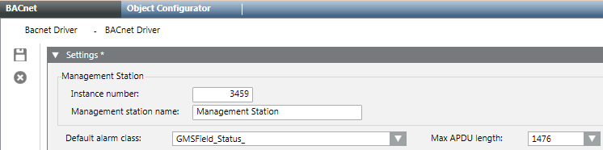
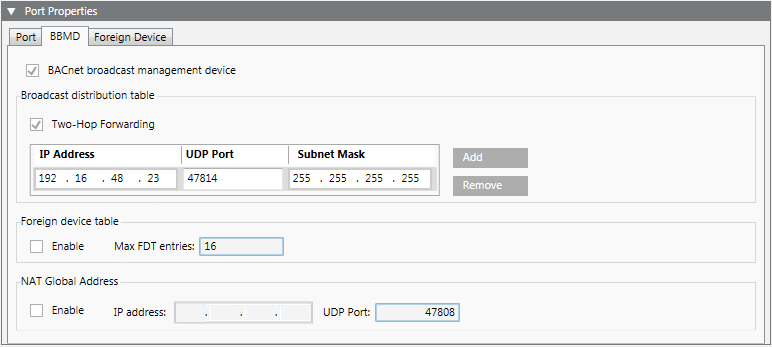
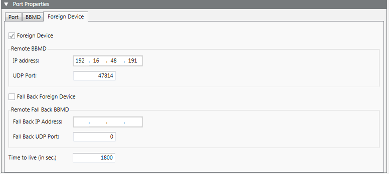
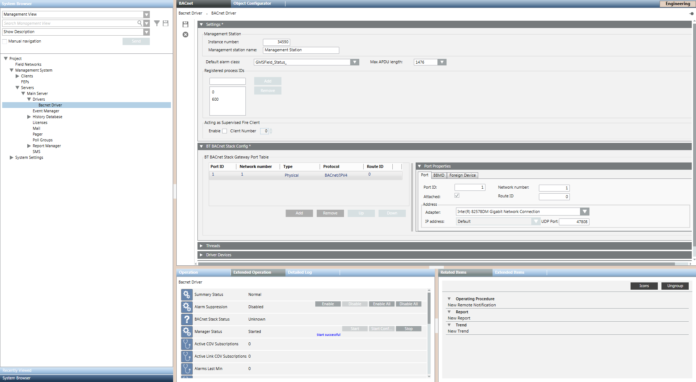

Change Driver and Network Configuration
Scenario: You want to change the driver and network configuration without the network assistant,
Reference: For background information, see the Desigo Automation section.
Prerequisites:
- System Manager is in Engineering mode.
- The System Browser is in Management View.
Steps:
1 – Stop the Desigo BACnet Driver
- Select Project > Management station > Servers > Main Server > Driver > [Driver name].
- Click the Extended Operation tab.
- Click, next to the property Manager status, the option Stop.
- The state
Stop successfulis displayed.
2 – Change the Desigo Automation BACnet Driver
For information on the various BACnet driver configurations, see the BACnet driver section.
- Select Project > Management station > Servers > Main Server > Driver > [Driver name].
- In the BACnet tab and open the Settings expander.

- Enter the Instance Number assigned to the driver as a BACnet client for Desigo Automation (for example, 3459). This number must be unique on the UDP network.
- In the Default alarm class section, the required alarm class is selected.
- Click Save
 .
.

NOTE:
If possible, create the number of BACnet drivers a customer will need on the engineering PC. You must reimport the data to retroactively add BACnet drivers. If no data import is carried out, the communication error #Com displays in the Operation tab.
3 – Configure Desigo BACnet Settings
- Open the BT-BACnet Stack Config expander.
- Proceed as follows:
a. In the BT BACnet Stack Gateway Port Table, click Add and select BACnet/IPV4.
b. In the Port Properties in the right pane, set the Network number where your management platform is connected (for example, 100).
b. Select the hardware Adapter in the corresponding field. Restart the drive if no adapter is listed.
NOTE: You do not typically need to modify the additional Port Properties as the default value is usually OK. The list includes the IP address, whose default value is the local station address, and the UPD Port, whose default value is 47808 (BAC0). - (Optional): Depending on the Topology application, a BBMD or Foreign Device must still be configured:
- Select the BBMD tab.
- Select the Foreign Device tab.
- Click Save .
NOTE:
You must reimport if you change the driver configuration after an import.

4 – Start the Desigo BACnet Driver
- Select the driver.
- Click the Extended Operation tab.
- Click, next to the property Manager status, the option Start.
- The state
Start successfulis displayed.